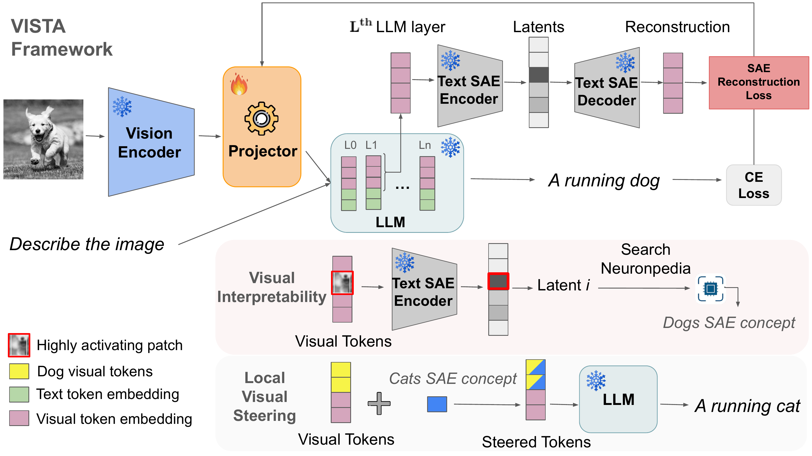
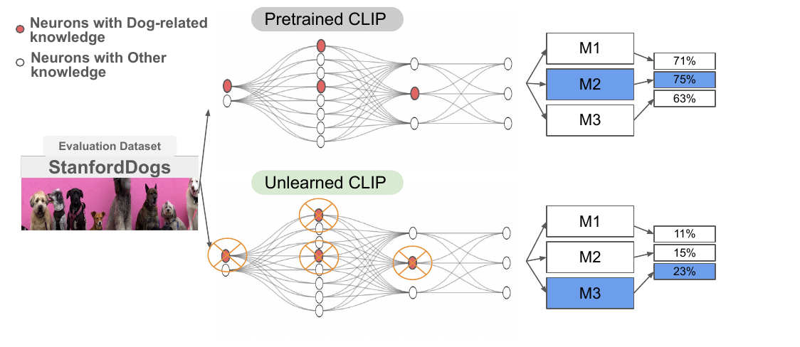
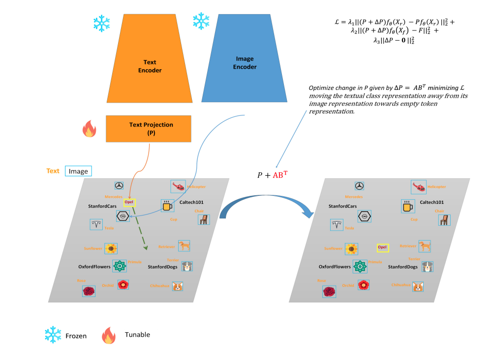
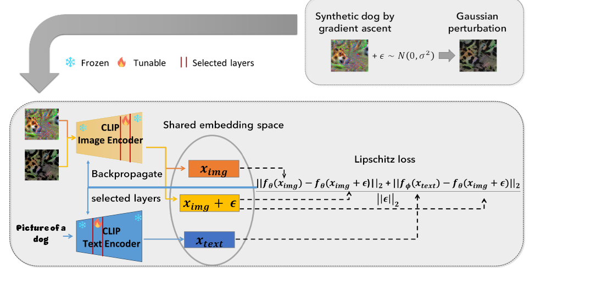
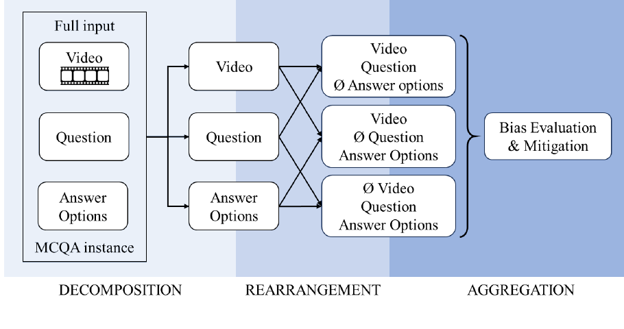
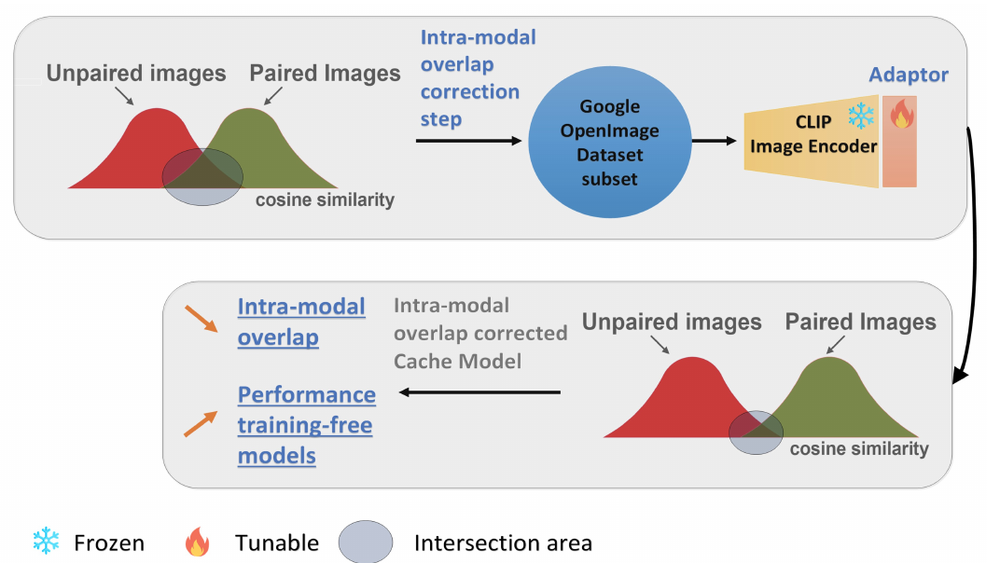

|
Research
I work at the intersection of vision and language. Representative publications are below.
|
|

|
Interpretability Transfer from Language to Vision via Sparse Autoencoders
Alexey Kravets, Da Li, Chuan Li, Da Chen, Vinay P. Namboodiri
International Conference on Machine Learning (ICML), 2026
We align textual Sparse Autoencoders with visual representations transferring interpretability to large vision-
language models (VLMs) at minimal cost, enabling both interpretability and steering of concepts within VLMs.
|
|

|
Rethinking Few-Shot CLIP Benchmarks: A Critical Analysis in the Inductive Setting
Alexey Kravets, Da Chen, Vinay P. Namboodiri
International Conference on Computer Vision (ICCV), 2025
We identify a flaw in the evaluation of existing few-shot methods with CLIP and propose a
pipeline to evaluate them more fairly using unlearning.
|
|

|
Zero-shot CLIP Class Forgetting via Text-Image Space Adaptation
Alexey Kravets, Vinay P. Namboodiri
Transactions on Machine Learning Research (TMLR), 2025
We propose a class removal technique for CLIP without using any images, but only text of the class to forget.
The method relies on changing the text projection matrix in CLIP.
|
|

|
Zero-Shot Class Unlearning in CLIP with Synthetic Samples
Alexey Kravets, Vinay P. Namboodiri
Winter Conference on Applications of Computer Vision (WACV), 2025
We unlearn classes from CLIP without real data by generating synthetic samples and
applying Lipschitz regularization.
|
|

|
Addressing Blind Guessing: Calibration of Selection Bias in Multiple-Choice Question Answering by Video Language Models
Olga Loginova, Oleksandr Bezrukov, Ravi Shekhar, Alexey Kravets
Annual Meeting of the Association for Computational Linguistics (ACL), 2025
We show that video-language models suffer from positional bias in multiple-choice QA and
introduce a post-processing calibration technique based on fairness bias metrics.
|
|

|
CLIP Adaptation by Intra-modal Overlap Reduction
(Oral)
Alexey Kravets, Vinay P. Namboodiri
British Machine Vision Conference (BMVC), 2024
We improve training-free few-shot learning methods that use CLIP by reducing the
intra-modal overlap in the CLIP image encoder.
|
|
{kind=link}